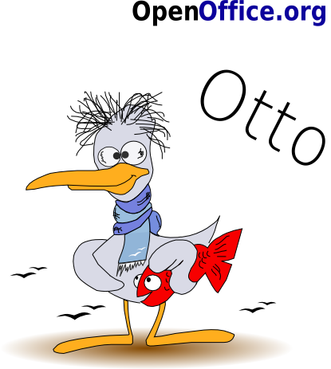

Scuola, Università e Biblioteche
La sezione Scuola, Università e Biblioteche si occupa di tutte le tematiche riguardanti l'utilizzo di OpenOffice.org nell'insegnamento e nella didattica, con lo scopo di promuovere e diffondere OpenOffice.org nelle scuole e nelle biblioteche.
Aree didattiche
| Progetto DidaticOOo | |||
Grazie a Open Clip Art Library ed ai volontari OpenOffice.org per la grafica utilizzata in questa pagina.